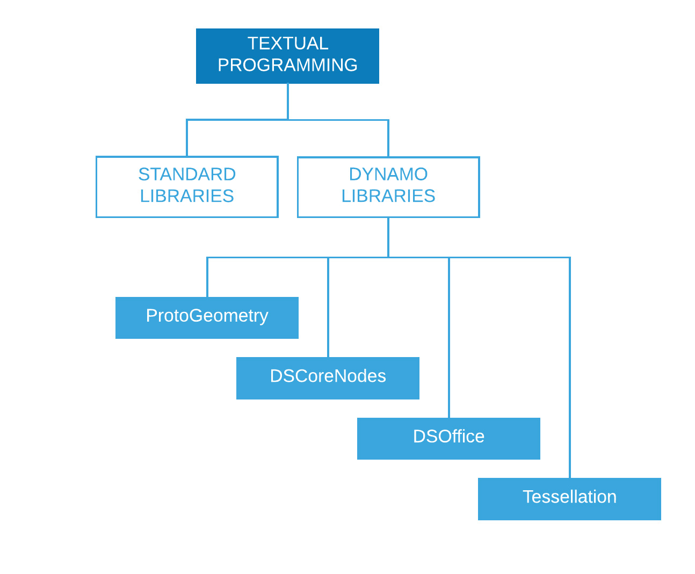

Scripting Reference
This reference page extends the best practices covered in Scripting Strategies with greater detail on code libraries, labeling, and styling. We will be using Python to illustrate the concepts below, but the same principles would apply in Python and C#(Zerotouch) but in different syntax.
Which Libraries to Use
Standard libraries are external to Dynamo and are present in the programming languages Python and C# (Zerotouch). Dynamo also has its own set of libraries that directly correspond to it's node hierarchy, enabling the user to build anything in code that could be made with nodes and wires. The following is a guide for what each Dynamo library gives access to and when to use a standard one.

Standard Libraries and Dynamo Libraries
- Standard libraries from Python and C# can be used to build advanced data and flow structures in the Dynamo environment.
- Dynamo libraries directly correspond to the node hierarchy for creating geometry and other Dynamo objects.
Dynamo Libraries
-
ProtoGeometry*
- Functionality: Arc, Bounding Box, Circle, Cone, Coordinate System, Cuboid, Curve, Cylinder, Edge, Ellipse, Ellipse Arc ,Face, Geometry, Helix, Index Group, Line, Mesh, Nurbs Curve, Nurbs Surface, Plane, Point, Polygon, Rectangle, Solid, Sphere, Surface, Topology, TSpline, UV, Vector, Vertex.
- How to import:
import Autodesk.DesignScript.Geometry
``
-
DSCoreNodes
- Functionality: Color, Color Range 2D, Date Time, Time Span, IO, Formula, Logic, List, Math, Quadtree, String, Thread.
- How to import:
import DSCore
-
Tessellation
- Functionality: Convex Hull, Delaunay, Voronoi.
- How to import:
import Tessellation
-
DSOffice
- Functionality: Excel.
- How to import:
import DSOffice
{% hint style="warning" %} *Note: When using ProtoGeometry through Python or C#, you are creating unmanaged objects, which need have their memory managed manually - please see section below: Unmanaged Objects, for more info. {% endhint %}
Label Carefully
While scripting, we are constantly using identifiers to denote things like variables, types, functions, and other entities. Through this system of symbolic notation, while building algorithms we can conveniently refer to information by way of labels --usually made up of a sequence of characters. Naming things well plays a significant role in writing code that can be easily read and understood by others as well as your future self! Here are some tips to keep in mind while naming things in your script:
It´s OK to use abbreviations, but explain the abbreviation with a comment:
### BAD
csfX = 1.6
csfY= 1.3
csfZ = 1.0
### GOOD
# column scale factor (csf)
csfX = 1.6
csfY= 1.3
csfZ = 1.0
Avoid redundant labeling:
### BAD
import car
seat = car.CarSeat()
tire = car.CarTire()
### GOOD
import car
seat = car.Seat()
tire = car.Tire()
Use positive logic for your variable names instead of negative logic:
### BAD
if 'mystring' not in text:
print 'not found'
else:
print 'found'
print 'processing'
### GOOD
if 'mystring' in text:
print 'found'
print 'processing'
else:
print 'not found'
Prefer “reverse notation”:
### BAD
agents = …
active_agents = …
dead_agents ...
### GOOD
agents = …
agents_active = …
agents_dead = ...
It’s more sensible, in structural terms.
Aliases should be used to shorten overly long and often repeated chains:
### BAD
from RevitServices.Persistence import DocumentManager
DocumentManager = DM
doc = DM.Instance.CurrentDBDocument
uiapp = DM.Instance.CurrentUIApplication
### GOOD
from RevitServices.Persistence import DocumentManager as DM
doc = DM.Instance.CurrentDBDocument
uiapp = DM.Instance.CurrentUIApplication
Aliasing can quickly lead to very confusing and non-standard programs.
Only use necessary words:
### BAD
rotateToCoord = rotateFromCoord.Rotate(solid.ContextCoordinateSystem.Origin,Vector.ByCoordinates(0,0,1),5)
### GOOD
toCoord = fromCoord.Rotate(solid.ContextCoordinateSystem.Origin,Vector.ByCoordinates(0,0,1),5)
“Everything should be made as simple as possible, but not simpler.” – Albert Einstein
Style Consistently
Generally speaking there is more than one way to program just about anything, therefore your “personal style” of scripting is the result of the countless small decisions you choose to make (or not make) along the way. That said, the readability and maintainability of your code is a direct result of its internal consistency as well as its adherence to general stylistic conventions. As a rule of thumb, code that looks the same in two places should work the same, too. Here are a few tips for writing clear and consistent code.
Naming conventions: (Choose one of the conventions below for each type of entity in your code and stick to it!)
- Variables, functions, methods, packages, modules:
lower_case_with_underscores - Classes and Exceptions:
CapWords - Protected methods and internal functions:
_single_leading_underscore(self, ...) - Private methods:
__double_leading_underscore(self, ...) - Constants:
ALL_CAPS_WITH_UNDERSCORES
Tip: Avoid one-letter variables (esp. l, O, I) except in very short blocks, when the meaning is clearly visible from the immediate context.
Use of blank lines:
- Surround top-level function and class definitions with two blank lines.
- Method definitions inside a class are surrounded by a single blank line.
- Extra blank lines may be used (sparingly) to separate groups of related functions.
Avoid extraneous whitespace:
-
Immediately inside parentheses, brackets or braces:
### BAD function( apples[ 1 ], { oranges: 2 } )### GOOD: function(apples[1], {oranges: 2}) -
Immediately before a comma, semicolon, or colon:
### BAD if x == 2 : print x , y ; x , y = y , x### GOOD if x == 2: print x, y; x, y = y, x -
Immediately before the open parenthesis that starts the argument list of a function call:
### BAD function (1)### GOOD function(1) -
Immediately before the open parenthesis that starts an indexing or slicing:
### BAD dict ['key'] = list [index]### GOOD dict['key'] = list[index] -
Always surround these binary operators with a single space on either side:
assignment ( = ) augmented assignment ( += , -= etc.) comparisons ( == , < , > , != , <> , <= , >= , in , not in , is , is not ) Booleans ( and , or , not )
Watch line length:
- Don't stress over it ~ 79 characters.
- Limiting the required editor window width makes it possible to have several files open side-by-side, and works well when using code review tools that present the two versions in adjacent columns.
- Long lines can be broken over multiple lines by wrapping expressions in parentheses:
Avoid obvious and redundant comments:
-
Sometimes fewer comments makes for more readable code. Especially if it forces you to use meaningful symbol names instead.
-
Adopting good coding habits reduces dependence on comments:
### BAD # get the country code country_code = get_country_code(address) # if country code is US if (country_code == 'US'): # display the form input for state print form_input_state()### GOOD # display state selection for US users country_code = get_country_code(address) if (country_code == 'US'): print form_input_state()
Tip: Comments tell you why, Code tells you how.
Check out open source code:
- Open Source projects are built on the collaborative efforts of many developers. These projects need to maintain a high level of code readability so that the team can work together as efficiently as possible. Therefore, it is a good idea to browse through the source code of these projects to observe what these developers are doing.
- Improve your conventions:
- Question whether or not each convention is working for the needs at hand.
- Is functionality/efficiency being compromised?
C# (Zerotouch) Standards
Check out these wiki pages for guidance on writing C# for Zerotouch and contributing to Dynamo:
- This wiki covers some general coding standards for documenting and testing your code: https://github.com/DynamoDS/Dynamo/wiki/Coding-Standards
- This wiki specifically covers naming standards for libraries, categories, node names, port names, and abbreviations: https://github.com/DynamoDS/Dynamo/wiki/Naming-Standards
Unmanaged Objects:
When using Dynamo's Geometry library (ProtoGeometry) from Python or C# geometry objects that you create will not be managed by the virtual machine, and the memory of many of these objects will need to be cleaned up manually. To cleanup native or unmanaged objects you can use the Dispose method or the using keyword. See this wiki entry for an overview: https://github.com/DynamoDS/Dynamo/wiki/Zero-Touch-Plugin-Development#dispose--using-statement.
You only need to dispose unmanaged resources that you don't return into the graph or store a reference to. For the rest of this section, we'll refer to these objects as intermediate geometry. You can see an example of this class of object in the code example below. This zero touch C# function singleCube returns a single cube, but creates 10000 extra cubes during its execution. We can pretend this other geometry was used as some intermediate construction geometry.
This zero touch function will most likely crash Dynamo. Since we created 10000 solids, but only stored one of them, and only returned that one. We should instead, dispose all of our intermediate cubes, except the one that we return. We don't want to dipose what we return, as it will be propogated into the graph and used by other nodes.
public Cuboid singleCube(){
var output = Cuboid.ByLengths(1,1,1);
for(int i = 0; i<10000;i++){
output = Cuboid.ByLengths(1,1,1);
}
return output;
}
The fixed code would look something like:
public Cuboid singleCube(){
var output = Cuboid.ByLengths(1,1,1);
var toDispose = new List<Geometry>();
for(int i = 0; i<10000;i++){
toDispose.Add(Cuboid.ByLengths(1,1,1));
}
foreach(IDisposable item in toDispose ){
item.Dispose();
}
return output;
}
In general you only need to dispose geometry like Surfaces, Curves, and Solids. To be safe though, you can dispose all geometry types (Vectors, Points, CoordinateSystems).